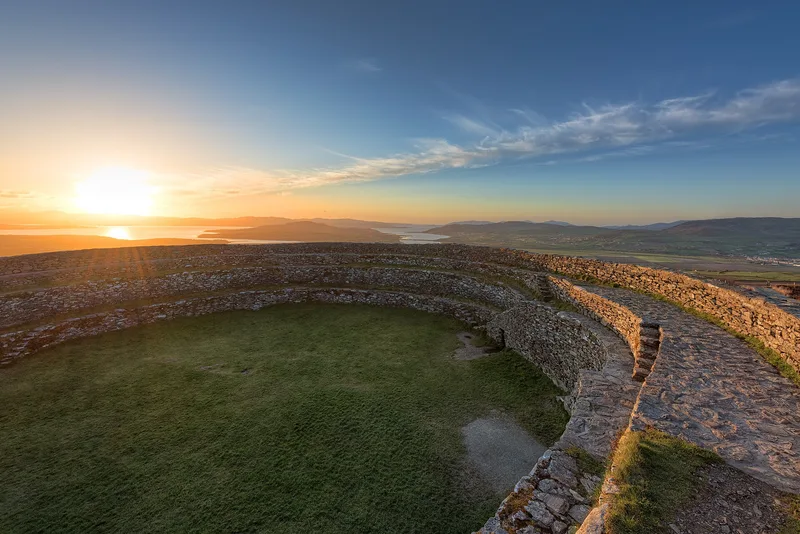

Explore Ireland's History
From prehistoric ring forts to Norman castles, every invasion and rebellion left its mark in Irish stone. These are the epochs that shaped a nation — and the monuments that survived to tell the tale.

500 BC – 400 ADCeltic Ireland & the Ring Forts
Before castles, Ireland was a land of 40,000 ring forts — circular earthen enclosures called ráths and cashels. These weren't mere farms — they were the seats of Gaelic chieftains, defended homesteads in a landscape of cattle raids and tribal warfare.
 795 – 1014
795 – 1014
The Viking Age
The longships came first to plunder monasteries, then to stay. Norse raiders founded Dublin, Waterford, Wexford, Cork and Limerick as fortified trading towns — Ireland's first true urban settlements — before Brian Boru broke their power at Clontarf.
 1169 – 1300
1169 – 1300
The Norman Invasion
When Strongbow landed at Waterford in 1170, he brought motte-and-bailey castles, stone keeps, and feudal ambition. Within a generation, Norman lords had raised Trim, Kilkenny, Carrickfergus and dozens more — the most concentrated castle-building campaign in Irish history.
 1400 – 1600
1400 – 1600
The Gaelic Tower Houses
Ireland's most distinctive contribution to castle architecture: thousands of small, fierce tower houses built by both Gaelic and Norman-Irish lords. There are more surviving tower houses in Ireland than anywhere else in Europe.
 1649 – 1653
1649 – 1653
Cromwell's Conquest
Oliver Cromwell's campaign was the most devastating in Irish history. Castle after castle fell to his artillery and his policy of 'to Hell or to Connacht.' The sieges of Drogheda and Wexford became bywords for brutality, and Ireland's Gaelic order was broken forever.
 1700 – 1920
1700 – 1920
The Great Houses & Decline
As castles became obsolete, the Anglo-Irish Ascendancy built grand country houses — Powerscourt, Castletown, Russborough. Many were burned during the War of Independence. Today they stand as monuments to a vanished ruling class.